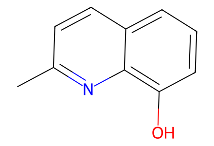
Cc1ccc2cccc(O)c2n1Chemical-structure-only transcription of main Schemes2-4: source compound identities and directed step connectivity. Experimental reagents, solvents, yields, temperatures, timing, and all microbiological methods are outside this restricted extraction. SI is NMR/crystallographic characterization, not an added preparative source. Facts compiled deterministically; independent review pending.
完整 JSON · 逐步 CSV · 路线序列 · SDF · HRMS 核对
| 事件 | 分子连接 | 报告产率 | Canonical reaction SMILES |
|---|---|---|---|
| E01 | 6 → 5 | not reported | Cc1ccc2cccc(O)c2n1>>Cc1ccc2c(n1)C(=O)C(Cl)=C(Cl)C2=O |
| E02 | 5 + 2-chloroethylamine → 3 + 4 | not reported | Cc1ccc2c(n1)C(=O)C(Cl)=C(Cl)C2=O.NCCCl>>Cc1ccc2c(n1)C(=O)C(Cl)=C(NCCCl)C2=O.Cc1ccc2c(n1)C(=O)C(NCCCl)=C(Cl)C2=O |
| E03 | 3 → 7 | not reported | Cc1ccc2c(n1)C(=O)C(NCCCl)=C(Cl)C2=O>>Cc1ccc2c(n1)C(=O)C1=C(SCCN1)C2=O |
| E04 | 4 → 8 | not reported | Cc1ccc2c(n1)C(=O)C(Cl)=C(NCCCl)C2=O>>Cc1ccc2c(n1)C(=O)C1=C(NCCS1)C2=O |
| A01 | 7 → 9 | not reported | Cc1ccc2c(n1)C(=O)C1=C(SCCN1)C2=O>>Cc1ccc2c(n1)C(=O)C1=C(C2=O)S(=O)CCN1 |
| A02 | 9 → 10 | not reported | Cc1ccc2c(n1)C(=O)C1=C(C2=O)S(=O)CCN1>>Cc1ccc2c(n1)C(=O)C1=C(C2=O)S(=O)(=O)CCN1 |
| A03 | 7 → 10 | not reported | Cc1ccc2c(n1)C(=O)C1=C(SCCN1)C2=O>>Cc1ccc2c(n1)C(=O)C1=C(C2=O)S(=O)(=O)CCN1 |
| A04 | 10 → 1 | not reported | Cc1ccc2c(n1)C(=O)C1=C(C2=O)S(=O)(=O)CCN1>>O=C(O)c1ccc2c(n1)C(=O)C1=C(C2=O)S(=O)(=O)CCN1 |
| A05 | 7 → 11 | not reported | Cc1ccc2c(n1)C(=O)C1=C(SCCN1)C2=O>>O=C(O)c1ccc2c(n1)C(=O)C1=C(SCCN1)C2=O |
| A06 | 11 → 12 | not reported | O=C(O)c1ccc2c(n1)C(=O)C1=C(SCCN1)C2=O>>O=C(O)c1ccc2c(n1)C(=O)C1=C(C2=O)S(=O)CCN1 |
| A07 | 11 → 1 | not reported | O=C(O)c1ccc2c(n1)C(=O)C1=C(SCCN1)C2=O>>O=C(O)c1ccc2c(n1)C(=O)C1=C(C2=O)S(=O)(=O)CCN1 |
| A08 | 1 → 13 | not reported | O=C(O)c1ccc2c(n1)C(=O)C1=C(C2=O)S(=O)(=O)CCN1>>O=C(O)c1ccc2c(n1)C(=O)C1=C(C2=O)S(=O)(=O)C=CN1 |
| B01 | 8 → 14 | not reported | Cc1ccc2c(n1)C(=O)C1=C(NCCS1)C2=O>>Cc1ccc2c(n1)C(=O)C1=C(NCCS1=O)C2=O |
| B02 | 14 → 15 | not reported | Cc1ccc2c(n1)C(=O)C1=C(NCCS1=O)C2=O>>Cc1ccc2c(n1)C(=O)C1=C(NCCS1(=O)=O)C2=O |
| B03 | 8 → 15 | not reported | Cc1ccc2c(n1)C(=O)C1=C(NCCS1)C2=O>>Cc1ccc2c(n1)C(=O)C1=C(NCCS1(=O)=O)C2=O |
| B04 | 15 → 16 | not reported | Cc1ccc2c(n1)C(=O)C1=C(NCCS1(=O)=O)C2=O>>Cc1ccc2c(n1)C(=O)C1=C(NC=CS1(=O)=O)C2=O |
| B05 | 16 → 2 | not reported | Cc1ccc2c(n1)C(=O)C1=C(NC=CS1(=O)=O)C2=O>>O=C(O)c1ccc2c(n1)C(=O)C1=C(NC=CS1(=O)=O)C2=O |
| B06 | 8 → 17 | not reported | Cc1ccc2c(n1)C(=O)C1=C(NCCS1)C2=O>>O=C(O)c1ccc2c(n1)C(=O)C1=C(NCCS1)C2=O |
| B07 | 17 → 18 | not reported | O=C(O)c1ccc2c(n1)C(=O)C1=C(NCCS1)C2=O>>O=C(O)c1ccc2c(n1)C(=O)C1=C(NCCS1=O)C2=O |
| B08 | 17 → 19 | not reported | O=C(O)c1ccc2c(n1)C(=O)C1=C(NCCS1)C2=O>>O=C(O)c1ccc2c(n1)C(=O)C1=C(NCCS1(=O)=O)C2=O |
| B09 | 19 → 2 | not reported | O=C(O)c1ccc2c(n1)C(=O)C1=C(NCCS1(=O)=O)C2=O>>O=C(O)c1ccc2c(n1)C(=O)C1=C(NC=CS1(=O)=O)C2=O |

Cc1ccc2cccc(O)c2n1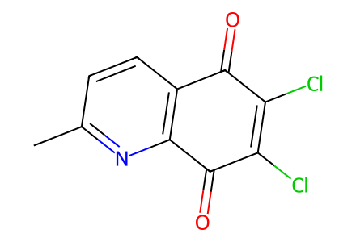
Cc1ccc2c(n1)C(=O)C(Cl)=C(Cl)C2=O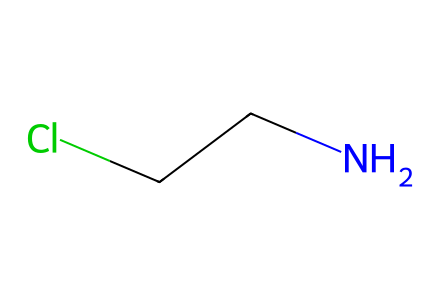
NCCCl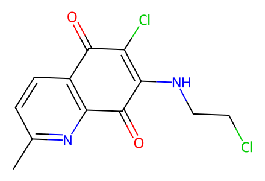
Cc1ccc2c(n1)C(=O)C(NCCCl)=C(Cl)C2=O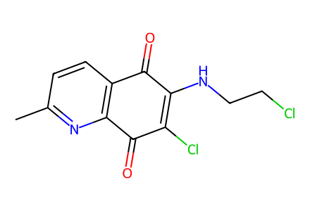
Cc1ccc2c(n1)C(=O)C(Cl)=C(NCCCl)C2=O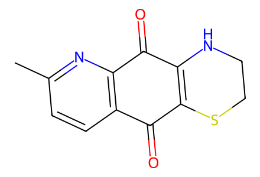
Cc1ccc2c(n1)C(=O)C1=C(SCCN1)C2=O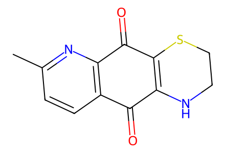
Cc1ccc2c(n1)C(=O)C1=C(NCCS1)C2=O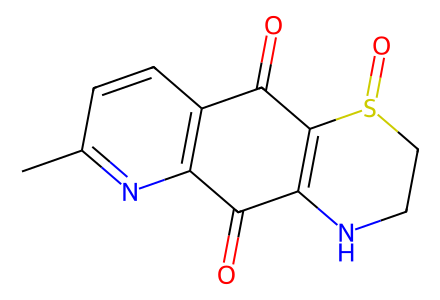
Cc1ccc2c(n1)C(=O)C1=C(C2=O)S(=O)CCN1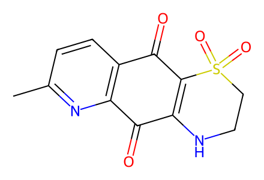
Cc1ccc2c(n1)C(=O)C1=C(C2=O)S(=O)(=O)CCN1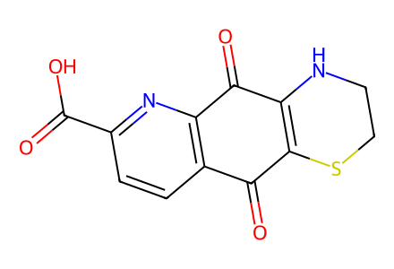
O=C(O)c1ccc2c(n1)C(=O)C1=C(SCCN1)C2=O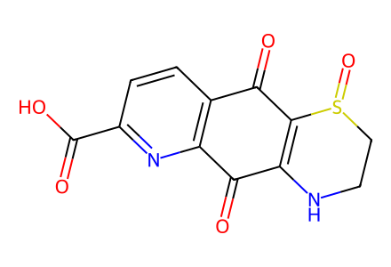
O=C(O)c1ccc2c(n1)C(=O)C1=C(C2=O)S(=O)CCN1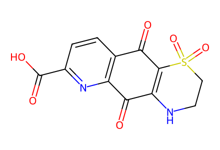
O=C(O)c1ccc2c(n1)C(=O)C1=C(C2=O)S(=O)(=O)CCN1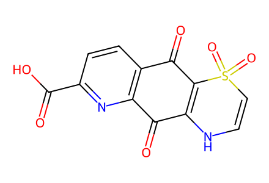
O=C(O)c1ccc2c(n1)C(=O)C1=C(C2=O)S(=O)(=O)C=CN1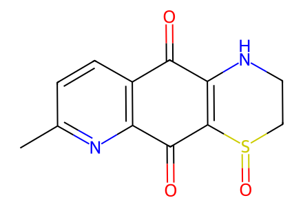
Cc1ccc2c(n1)C(=O)C1=C(NCCS1=O)C2=O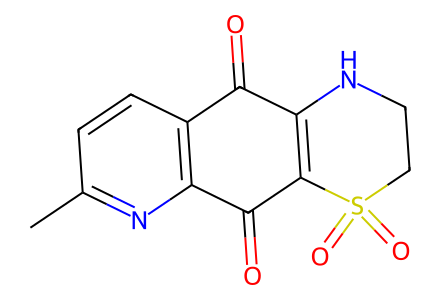
Cc1ccc2c(n1)C(=O)C1=C(NCCS1(=O)=O)C2=OCc1ccc2c(n1)C(=O)C1=C(NC=CS1(=O)=O)C2=O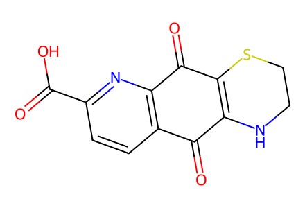
O=C(O)c1ccc2c(n1)C(=O)C1=C(NCCS1)C2=O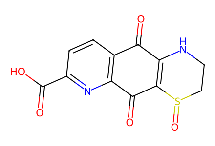
O=C(O)c1ccc2c(n1)C(=O)C1=C(NCCS1=O)C2=O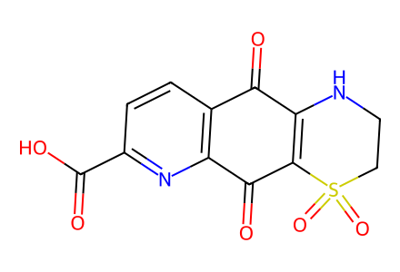
O=C(O)c1ccc2c(n1)C(=O)C1=C(NCCS1(=O)=O)C2=O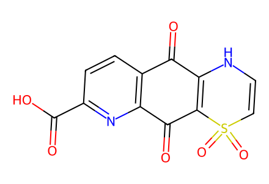
O=C(O)c1ccc2c(n1)C(=O)C1=C(NC=CS1(=O)=O)C2=O